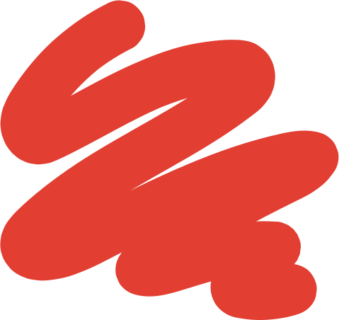

Función centralRepositorio de Evidencia
Una biblioteca única, con búsqueda y filtros por tema, territorio y nivel de evidencia. Estudios, reportes de aprendizaje y mapas de brechas, cada uno con su resumen en lenguaje sencillo generado con IA y validado por EdLab.
Reporte de aprendizaje · Aprendizajes fundamentales
Resultados de las evaluaciones de lectura en Colombia (EGRA 2023–2025)
6.530 estudiantes evaluados en Barranquilla en 2024: 42 % en primero y 28 % en segundo con alto riesgo de rezago.
Ejemplo de lo que el Hub mostraría · Fuente: Banco Mundial y CEPE, 2026
Método CASEL. La guía de programas de CASEL revisa cada programa y le asigna una designación comparable (SELect, Promising o SEL-Supportive). El Repositorio adopta esa lógica: fichas con nivel de evidencia claro, para comparar sin leer 80 páginas.